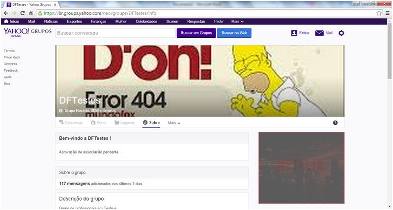

Sempre tivemos dúvidas sobre como entrar na lista de emails(chamamos de comunidade) do DFTests
Estamos aqui para desvendar este mistério que vem rondando os Testes de Software no Brasil por mais de 3 anos.
Grupos de Testes nacionais
Veja aqui abaixo mais informações sobre como entrar na comunidade.
PASSO 1
Envie email para: dftestes-subscribe@yahoogrupos.com.br
Escreva no email:
Assunto: Assinar a lista
Corpo: Gostaria de assinar a lista, pois trabalho com testes e gostaria de obter novas informações
sobre testes de software.
Bem como divulgar informações sobre testes.
Exemplo de envio do email
PASSO 2
Após o envio do email, você receberá um email de retorno com o link para realizar a confirmação do pedido de assinatura.
Clique no Link e será redirecionado para a página de confirmação
 Exemplo de email de confirmação
Exemplo de email de confirmação
PASSO 3
Será apresentada a página de confirmação.
ATENÇÃO, este é o passo principal para ser aceito na lista de emails.
Informe o texto abaixo:
1- Texto exemplo: “Olá, trabalho com testes de software a alguns anos,
gostaria de participar deste grupo de testes. Gosto de tudo sobre testes.”
Caso não informe nesta confirmação as palavras "Testes, testes de software, qualidade de software"
entre outras, pode ser que não seja aceito para receber as mensagens
2- Após o preenchimento do texto, clique em Enviar Pedido.
Exemplo de texto de confirmação
PASSO 4
Após ter realizado todos os passos anteriores, é só esperar.

Pronto, agora só aguardar receber os emails
PASSO 5
Pronto agora você faz parte da lista de emails da maior comunidade (atualmente) do Brasil, quando se fala em Testes de
Software, se lembra do DFTestes.
Lá tem vários tipos de profissionais, desde recrutadores, até icones da área nacional de Testes de Software.
Uma dica é: Crie um filtro, pois são vários emails diários, e nem todos conseguem acompanhar todas as discussões
DFTestes
Grupo de profissionais em Teste e Qualidade de Software.
Busca a integração dos profissionais, divulgação e melhorias no processo de testes por meio da propagação de conhecimentos.
É um grupo democrático, sem fins lucrativos e sem bandeiras de certificação.
Seja bem vindo!
Blog: -
Facebook: -
Yahoo Groups: https://br.groups.yahoo.com/neo/groups/DFTestes/info
Linkedin: -
Meetup: -
Slideshare: -
Twitter: @-
Eventos Nacionais: -
Eventos Regionais: -
Youtube: -
Moderadores: Cristiano Melo, Hudson Costa e Elias Nogueira